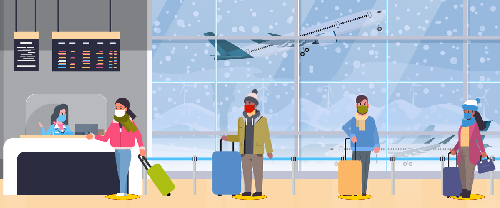
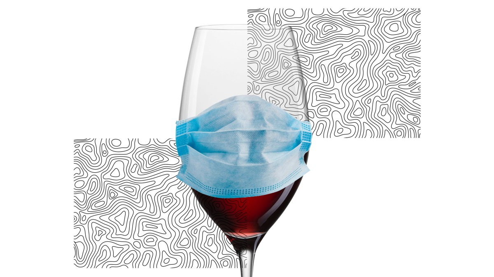

CDC Guidelines:
The gathering of families every year for certain events is an unrelenting force that most people must endure. However due to the pandemic this may change. The CDC is currently recommending that families do not travel to gather and do not meet with persons outside of their immediate household. If these rules are followed for the Christmas season are yet to be seen.
Staying Safe at Home:
Many people will still opt to go home this season, despite the risks. Many web pages offer tips for maintaining a safe environment and ensure that our loved ones don’t get sick. Some advice includes: "Having a small outdoor dinner with family and friends who live in your community; Visiting pumpkin patches or orchards where people use hand sanitizer before touching pumpkins or picking apples, wearing masks is encouraged or enforced, and people are able to maintain social distancing; Attending a small outdoor sports events with safety precautions in place"